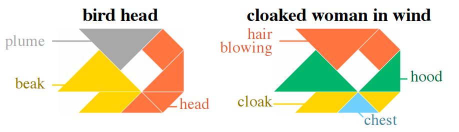
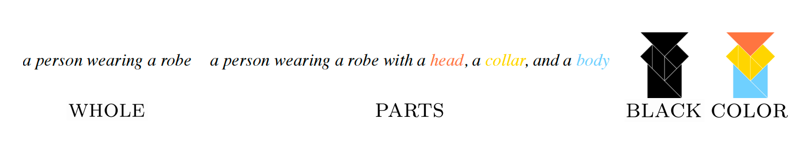
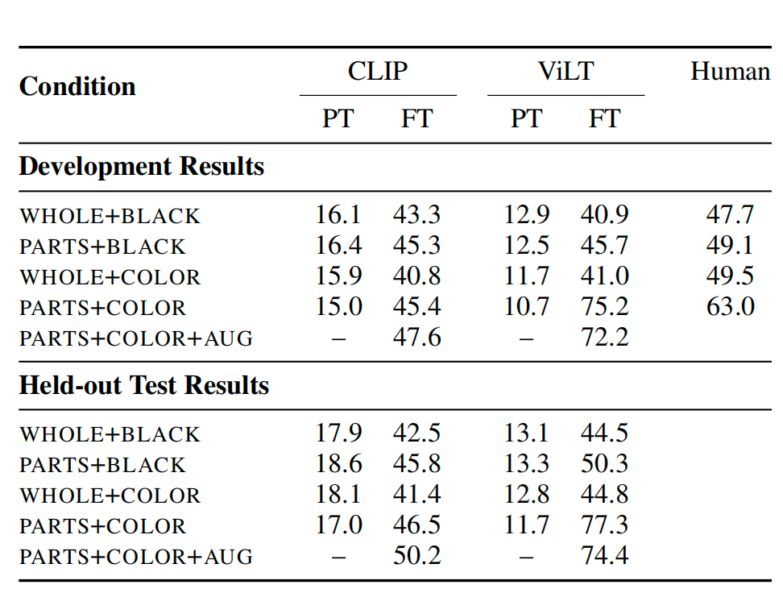

Abstract Visual Reasoning with Tangram Shapes
Abstract
- 构建了一个数据集，包含超过1000种拼图方式（使用拼图是参考了神经科学中以拼图作为刺激物的思想）
- 这个数据集同时兼顾了视觉和文本上的丰富，不仅包含整体形状的描述，还包括分段图和部件标签
- 利用这个数据集来测评多模态模型的抽象能力发现，预训练模型的表现一般，但经过微调的模型表现非常好
- 在语言和视觉输入联合编码的情况下，对部件的显式描述有助于人类和模型进行抽象推理
Introduction
参考是自然语言的核心功能，比如：我们会用“狗“去形容这一系列动物。人类的视觉和语言交互研究中通常会选择一些较为具体的视觉参考对象（如照片），因为这些对象往往只有一个公认的标签。相反地，拼图的含义确实模棱两可的： 本文做了以下工作： * 相比于现有行为研究的样本通限于10至20个形状，本文构建了1016个拼图形状，并且本文并不是每个拼图视为一个单一的整体形状，而是用矢量图形表示由原始拼图片段组成的图像（这里更加符合人类的认知） * 对每个形状，都可能存在不同的解释和分析，本文共构建了13,404个注释，每个注释都描述了一个完整的对象及其分段的部件 * 本文利用该数据集评估了ViLT和CLIP视觉推理能力，尤其是概念向抽象形状的泛化能力
Data Collection
这里的拼图实际上指的就是七巧板，本文将拼图转换成数字形式（SVG） 如何注释？ 标注者首先看到一个灰度拼图图像并完成句子提示“这个整体形状看起来像_。”；然后，标注者被要求选择一个或多个拼图部件，并完成提示“您选择的部分看起来像_。”这些部件随后会被上色，并且注释会以相应的颜色显示。 数据集划分 * 分析：两个重叠的数据集：FULL和DENSE：（1）FULL：包括1,016个拼图，每个拼图有10到11个注释（平均=10.11）；（2）DENSE：包括所有74个密集注释拼图的注释，每个拼图至少50个，平均有53.66个注释。 * 学习实验：创建训练（692个）、开发（125个）、测试（125个）和密集测试集（74个），所有密集注释拼图都在密集测试集中，其余三个集合是随机划分的。
Data analysis
30.8%的注释使用了类人的概念（例如，“舞者”），31.2%为非人类的生物概念（例如，“狗”），38.0%则为非生物的概念（例如，“房子”）
在视觉抽象中，存在一个中心问题：不同人对一个形状的主观理解或歧义程度（Murthy等，2022年），即一些描述比其他描述具有更高的共识性。
为此，本文定义了三种不同维度上的刻画指标：形状命名分歧（SND）、部件命名分歧（PND）和部件分段一致性（PSA）： * SND：一个整体形状注释是由\(M\)个词 \(\textbf{X}=<x_1, x_2, ..., x_M>\)，对于一个有\(N\)条注释\(\textbf{X}^{(j)}\)，其中\(j=1,2,..,N\)的拼图，我们为每个注释中每个词都定义一个权重\(w_i^{(j)}\)（注意，这里的下标表示第\(i\)个词，上标表示第\(j\)个注释）：
这个权重的计算可以理解为：我们对每个注释中的每个词都寻找在每条注释里共没有出现了多少次，再除以\(N-1\)。这也符合我们的认知：出现次数越少说明分歧越大、权重也就越大。然后对于一条注释\(\textbf{X}^{(j)}\)（长度为\(M^{(j)}\)），我们定义分歧为：\(\(W^{(j)}=\frac{1}{M^{(j)}}\sum_{i=1}^{M^{(j)}}w_i^{(j)}\)\)对于每个拼图形状，我们定义分歧为：
本文的数据集中SND均值相对较高，为0.91
- PND：与SND相似，但是表示的是注释内部每个部分的注释（计算逻辑和SND也一样），本文部件描述的相似性比整体形状描述更高，PND的均值为0.76
- PSA：PSA量化了部件分段的一致性，表示编辑一个分段以匹配另一个分段所需移动的最大片数。我们数据中的PSA均值为5.30，其值呈正态分布。
Visual Reasoning with Tangrams
任务： 给定一个文本\(\bar{x}\)和一组图像\(I={I_1, I_2, ...,I_k}\)，从中选择出和文本匹配的图像\(I^*\)。任务将表示为将这组图像中的每一个图像都和文本计算相似性分数\(f(\bar{x},I_i)\)，选出\(I^*\)使得\(\max f(\bar{x},I_i)\)
我们的实验测试了 CLIP 和 ViLT ：
- CLIP 对图像和文本有单独的编码器，我们的测试符合 CLIP 对比学习的预训练，通过分别对文本\(\bar{x}\)和所有图像\(I\in I\)进行编码，随后计算文本与每个图像的点积相似性分数来实现CLIP 的得分函数
- ViLT 使用单个编码器来同时处理文本和图像输入，我们使用匹配分类头实现\(f\)，从而计算出文本与图像的相似性分数
在实验中，我们使用了多种模态的输入：
实验结果：
- 模型的初始预训练权重（PT）下，CLIP和ViLT的表现普遍较差，这可能是因为CLIP的对比预训练目标类似于参考游戏
- 微调（FT）显著提高了两种模型的表现
Discussion
- 微调后的模型能否将概念推广到本任务之外的抽象图形上
- 预训练模型仍有很大的提升空间，maybe可以做到像人一样不用zero-shot完成任务
一点发散
测试最新的 MLLM ，Finetune MLLM 后再测试；
比较 Finetune 前后大模型抽象图形创作的能力（如何比较？）；
或者 Finetune 后让大模型做拼图游戏（不局限于七巧板）（用本文定义的矢量模式，方便定义损失），猜测：也许小模型 Finetune 后就可以做的很好，不需要大模型；
问题：
任务中输入是图片还是SVG，如果喝是PNG的话，部分之间有无明显的边界线
Finetune 一个 LMM 后让它用整体生成一张图片，来比较和原七巧板拼图的差异
（1）让模型先生成一个具象的图片（真实的狗），再去生成用七巧板拼成的狗，CoT的思想，RAG的思想（从超大的图像库中寻找到相似的图片），后续可以添加颜色
（2）技术创新：结合抽象能力
（3）评测手段：数学上，几何拼图的整体、各个部分的相似度，量化的指标（为主），也要有人工评测，大模型评测
本页面最近更新：，更新历史
发现错误？想一起完善？ 在 GitHub 上编辑此页！
本页面贡献者：OI-wiki
本页面的全部内容在 协议之条款下提供，附加条款亦可能应用